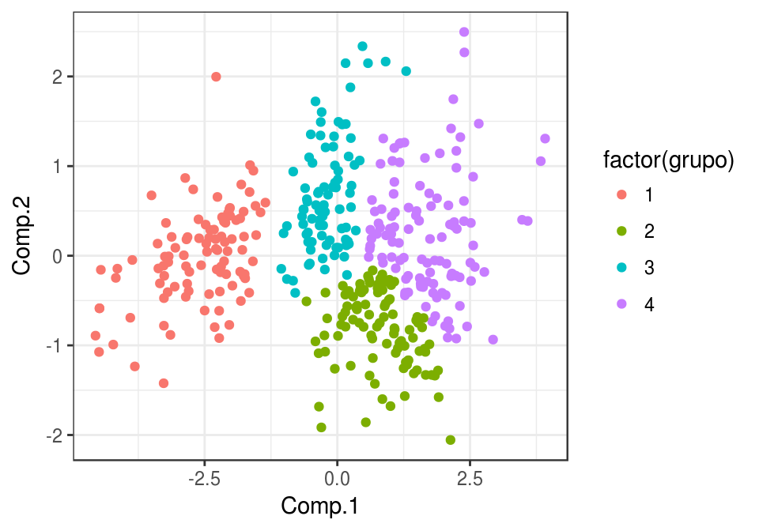
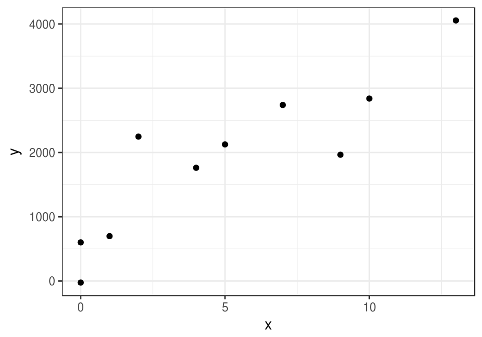
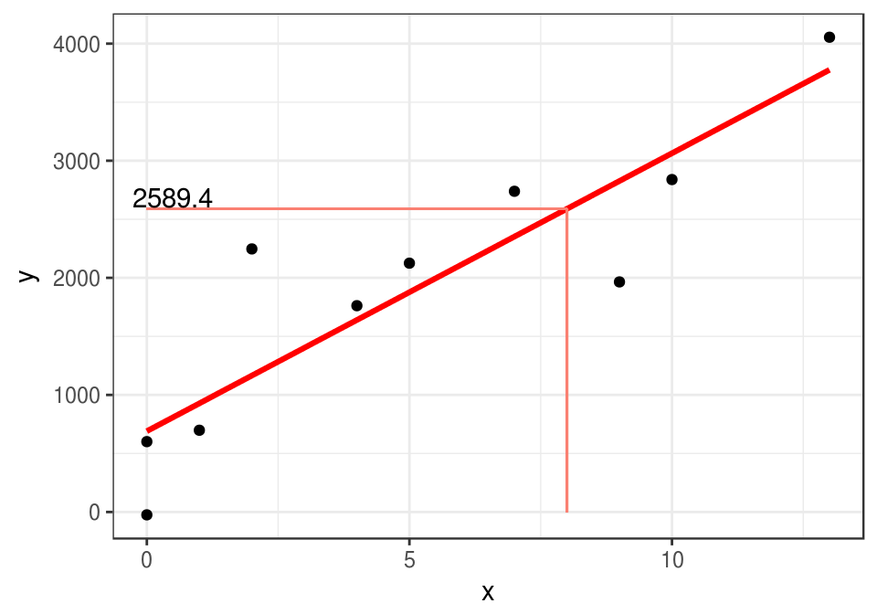
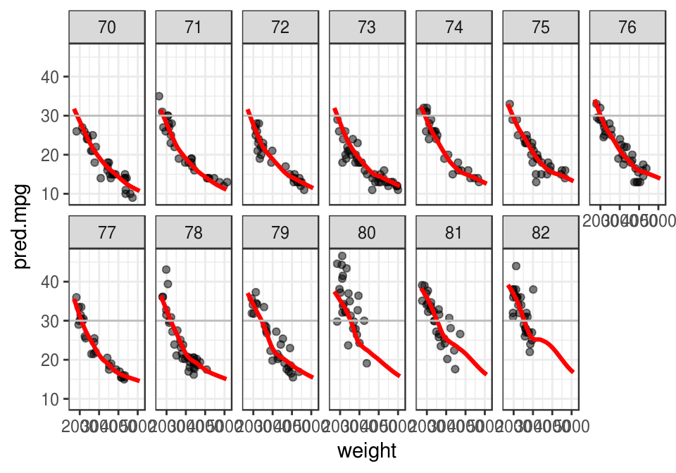
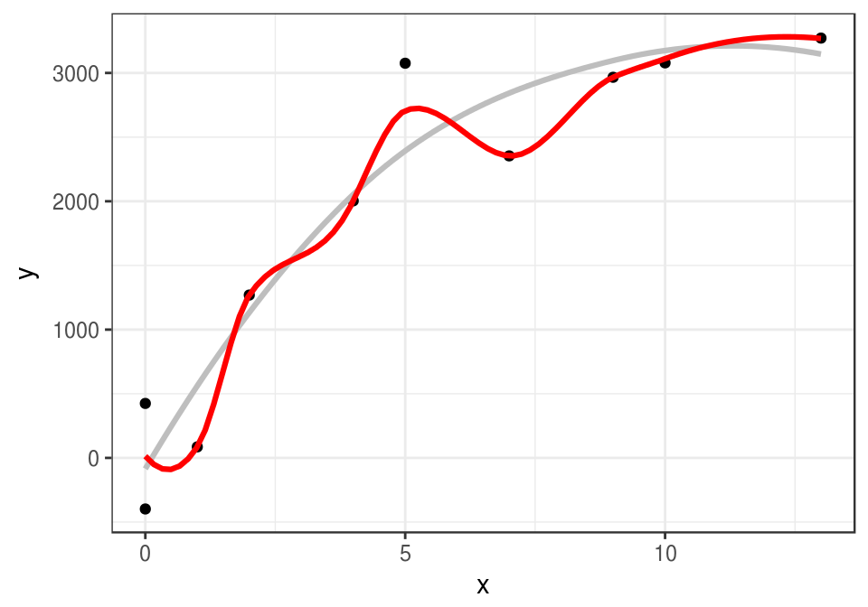

Clase 1 Introducción
1.1 ¿Qué es aprendizaje de máquina (machine learning)?
Métodos computacionales para aprender de datos con el fin de mejorar el desempeño en alguna tarea o toma de decisión.
Usualmente la tarea es predecir datos no observados (porque son costosos de medir o porque son observables sólo en el futuro), pero más generalmente buscamos modelar patrones o encontrar estructuras interesantes en los datos.
Ejemplos de tareas de aprendizaje:
- Predecir si un cliente de tarjeta de crédito va a caer en impago en los próximos tres meses.
- Reconocer palabras escritas a mano (OCR).
- Detectar llamados de ballenas en grabaciones de boyas.
- Estimar el ingreso mensual de un hogar a partir de las características de la vivienda, posesiones y equipamiento y localización geográfica.
- Dividir a los clientes de Netflix según sus gustos.
- Recomendar artículos a clientes de un programa de lealtad o servicio online.
Las razones usuales para intentar resolver estos problemas computacionalmente son diversas:
- Quisiéramos obtener una respuesta barata, rápida, automatizada, y con suficiente precisión. Por ejemplo, reconocer caracteres en una placa de coche de una fotografía se puede hacer por personas, pero eso es lento y costoso. Igual oír cada segundo de grabación de las boyas para saber si hay ballenas o no. Hacer mediciones directas del ingreso de un hogar requiere mucho tiempo y esfuerzo.
- Quisiéramos superar el desempeño actual de los expertos o de reglas simples utilizando datos: por ejemplo, en la decisión de dar o no un préstamo a un solicitante, puede ser posible tomar mejores decisiones con algoritmos que con evaluaciones personales o con reglas simples que toman en cuenta el ingreso mensual, por ejemplo.
- Queremos entender de manera más completa y sistemática el comportamiento de un fenómeno, identificando variables o patrones importantes.
Ejemplo: reconocimiento de dígitos escritos a mano
¿Cómo reconocer los siguientes dígitos de manera automática?
graficar_digitos <- function(data_frame){
matriz_digitos <- lapply(1:nrow(data_frame), function(x){
matrix(data_frame[x, 257:2], 16, 16)[16:1, ]
})
image(Reduce("rbind", matriz_digitos),
col = terrain.colors(30), axes = FALSE)
text(seq(0,1,1/10) + 0.05, 0.05, label = data_frame[, 1], cex = 1.5)
}En los datos tenemos los valores de cada pixel (los caracteres son imagenes de 16x16 pixeles), y una etiqueta asociada, que es el número que la imagen representa. Podemos ver las imágenes y las etiquetas:
library(ElemStatLearn)
muestra_1 <- zip.train[sample(1:nrow(zip.train), 10), ]
graficar_digitos(muestra_1)
muestra_2 <- zip.train[sample(1:nrow(zip.train), 10), ]
graficar_digitos(muestra_2)
Los 16x16=256 están escritos acomodando las filas de la imagen en vector de 256 valores (cada renglón de zip.train). Un dígito entonces se representa como sigue:
dim(zip.train)## [1] 7291 257zip.train[1,]## [1] 6.000 -1.000 -1.000 -1.000 -1.000 -1.000 -1.000 -1.000 -0.631 0.862
## [11] -0.167 -1.000 -1.000 -1.000 -1.000 -1.000 -1.000 -1.000 -1.000 -1.000
## [21] -1.000 -1.000 -1.000 -0.992 0.297 1.000 0.307 -1.000 -1.000 -1.000
## [31] -1.000 -1.000 -1.000 -1.000 -1.000 -1.000 -1.000 -1.000 -1.000 -0.410
## [41] 1.000 0.986 -0.565 -1.000 -1.000 -1.000 -1.000 -1.000 -1.000 -1.000
## [51] -1.000 -1.000 -1.000 -1.000 -0.683 0.825 1.000 0.562 -1.000 -1.000
## [61] -1.000 -1.000 -1.000 -1.000 -1.000 -1.000 -1.000 -1.000 -1.000 -0.938
## [71] 0.540 1.000 0.778 -0.715 -1.000 -1.000 -1.000 -1.000 -1.000 -1.000
## [81] -1.000 -1.000 -1.000 -1.000 -1.000 0.100 1.000 0.922 -0.439 -1.000
## [91] -1.000 -1.000 -1.000 -1.000 -1.000 -1.000 -1.000 -1.000 -1.000 -1.000
## [101] -0.257 0.950 1.000 -0.162 -1.000 -1.000 -1.000 -0.987 -0.714 -0.832
## [111] -1.000 -1.000 -1.000 -1.000 -1.000 -0.797 0.909 1.000 0.300 -0.961
## [121] -1.000 -1.000 -0.550 0.485 0.996 0.867 0.092 -1.000 -1.000 -1.000
## [131] -1.000 0.278 1.000 0.877 -0.824 -1.000 -0.905 0.145 0.977 1.000
## [141] 1.000 1.000 0.990 -0.745 -1.000 -1.000 -0.950 0.847 1.000 0.327
## [151] -1.000 -1.000 0.355 1.000 0.655 -0.109 -0.185 1.000 0.988 -0.723
## [161] -1.000 -1.000 -0.630 1.000 1.000 0.068 -0.925 0.113 0.960 0.308
## [171] -0.884 -1.000 -0.075 1.000 0.641 -0.995 -1.000 -1.000 -0.677 1.000
## [181] 1.000 0.753 0.341 1.000 0.707 -0.942 -1.000 -1.000 0.545 1.000
## [191] 0.027 -1.000 -1.000 -1.000 -0.903 0.792 1.000 1.000 1.000 1.000
## [201] 0.536 0.184 0.812 0.837 0.978 0.864 -0.630 -1.000 -1.000 -1.000
## [211] -1.000 -0.452 0.828 1.000 1.000 1.000 1.000 1.000 1.000 1.000
## [221] 1.000 0.135 -1.000 -1.000 -1.000 -1.000 -1.000 -1.000 -0.483 0.813
## [231] 1.000 1.000 1.000 1.000 1.000 1.000 0.219 -0.943 -1.000 -1.000
## [241] -1.000 -1.000 -1.000 -1.000 -1.000 -0.974 -0.429 0.304 0.823 1.000
## [251] 0.482 -0.474 -0.991 -1.000 -1.000 -1.000 -1.000Aprendizaje supervisado
Las tareas de aprendizaje se divide en dos grandes partes: aprendizaje supervisado y aprendizaje no supervisado.
- Aprendizaje supervisado Construir un modelo o algoritmo para predecir o estimar un target o una variable de salida a partir de ciertas variables de entrada.
Predecir y estimar, en este contexto, se refieren a cosas similares. Generalmente se usa predecir cuando se trata de variables que no son observables ahora, sino en el futuro, y estimar cuando nos interesan variables actuales que no podemos observar ahora por costos o por la naturaleza del fenómeno.
Por ejemplo, para identificar a los clientes con alto riesgo de impago de tarjeta de crédito, utilizamos datos históricos de clientes que han pagado y no han pagado. Con estos datos entrenamos un algoritmo para detectar anticipadamente los clientes con alto riesgo de impago.
Usualmente dividimos los problemas de aprendizaje supervisado en dos tipos, dependiendo de la variables salida:
- Problemas de regresión: cuando la salida es una variable numérica
- Problemas de clasificación: cuando la salida es una variable categórica.
Ejemplo: predecir el rendimiento de un coche.
Estimar directamente el rendimiento (km por litro de combustible) de un coche es costoso: hay que hacer varias pruebas en diversas condiciones, etc. ¿Podríamos estimar el rendimiento de un coche usando variables más accesibles, peso del coche, año de producción, etc.?
library(ISLR)
datos <- Auto[, c('name', 'weight','year', 'mpg')]
datos$peso_kg <- datos$weight*0.45359237
datos$rendimiento_kpl <- datos$mpg*(1.609344/3.78541178)
head(datos[, c('name','peso_kg', 'rendimiento_kpl')])## name peso_kg rendimiento_kpl
## 1 chevrolet chevelle malibu 1589.388 7.652587
## 2 buick skylark 320 1675.117 6.377156
## 3 plymouth satellite 1558.543 7.652587
## 4 amc rebel sst 1557.183 6.802299
## 5 ford torino 1564.440 7.227443
## 6 ford galaxie 500 1969.044 6.377156Y podríamos comenzar graficando rendimiento contra peso. Cada punto representa un coche distinto. En esta gráfica vemos que los valores de rendimiento varían según según peso de una manera sistemática: cuanto más grande es el peso, más bajo es el rendimiento:
library(ggplot2)
ggplot(datos,
aes(x=peso_kg, y=rendimiento_kpl)) +
geom_point() 
Podemos entonces ajustar una curva, que para cada nivel de peso da un valor de rendimiento que se ‘aleja lo menos posible’ de los valores de rendimiento cercanos. Por ejemplo: según la curva roja, ¿cómo haríamos la predicción para un peso de 1500 kg?
ggplot(datos,
aes(x=peso_kg, y=rendimiento_kpl)) + geom_point() +
geom_smooth(se =FALSE, colour='red', size=1.1,
span=0.5, method='loess')
Aprendizaje no supervisado
- Aprendizaje no supervisado En este caso no hay target o variable salida. Buscamos modelar y entender las relaciones entre variables y entre observaciones, o patrones importantes o interesantes en los datos.
Los problemas supervisados tienen un objetivo claro: hacer las mejores predicciones posibles bajo ciertas restricciones. Los problemas no supervisados tienden a tener objetivos más vagos, y por lo mismo pueden ser más difíciles.
Ejemplo: tipos de coches en el mercado
Quisieramos encontrar categorías de coches tales que: las categorías son diferentes entre sí, y los coches en una misma categoría son similares entre sí. Esta agrupación nos permite entender la estructura general de los datos, cómo están organizados en términos de similitud de características.
En este ejemplo, encontramos un plano de máxima variabilidad donde proyectamos los coches, y después formamos grupos de coches similares:
autos <- Auto[, c('mpg','displacement', 'horsepower','acceleration')]
comps_autos <- princomp(autos, cor = T)
clust <- hclust(dist(comps_autos$scores[,1:2]), method = 'ward.D')
autos$grupo <- cutree(clust, k = 4)
autos$Comp.1 <- comps_autos$scores[,1]
autos$Comp.2 <- comps_autos$scores[,2]
autos$nombre <- Auto$name
ggplot(autos, aes(x=Comp.1, y=Comp.2, colour=factor(grupo), label=nombre)) +
geom_point()
¿Cómo interpretamos los grupos?
head(subset(autos, grupo==1))## mpg displacement horsepower acceleration grupo Comp.1 Comp.2
## 1 18 307 130 12.0 1 -1.817719 -0.5042535
## 2 15 350 165 11.5 1 -2.800712 -0.3938195
## 3 18 318 150 11.0 1 -2.310357 -0.7966085
## 4 16 304 150 12.0 1 -2.213807 -0.3989781
## 5 17 302 140 10.5 1 -2.225309 -0.9183779
## 6 15 429 198 10.0 1 -3.900596 -0.6915313
## nombre
## 1 chevrolet chevelle malibu
## 2 buick skylark 320
## 3 plymouth satellite
## 4 amc rebel sst
## 5 ford torino
## 6 ford galaxie 500head(subset(autos, grupo==2))## mpg displacement horsepower acceleration grupo Comp.1 Comp.2
## 15 24 113 95 15.0 2 0.50234800 -0.3800473
## 19 27 97 88 14.5 2 0.79722704 -0.7509781
## 22 24 107 90 14.5 2 0.52837050 -0.5437610
## 24 26 121 113 12.5 2 -0.04757934 -1.2605758
## 30 27 97 88 14.5 2 0.79722704 -0.7509781
## 31 28 140 90 15.5 2 0.76454526 -0.4100595
## nombre
## 15 toyota corona mark ii
## 19 datsun pl510
## 22 audi 100 ls
## 24 bmw 2002
## 30 datsun pl510
## 31 chevrolet vega 2300head(subset(autos, grupo==3))## mpg displacement horsepower acceleration grupo Comp.1 Comp.2
## 16 22 198 95 15.5 3 0.01913364 0.090471378
## 17 18 199 97 15.5 3 -0.26705470 0.339015545
## 18 21 200 85 16.0 3 0.16412490 0.315611651
## 25 21 199 90 15.0 3 -0.05362631 0.004579963
## 34 19 232 100 13.0 3 -0.79359758 -0.413938751
## 35 16 225 105 15.5 3 -0.63973365 0.517394423
## nombre
## 16 plymouth duster
## 17 amc hornet
## 18 ford maverick
## 25 amc gremlin
## 34 amc gremlin
## 35 plymouth satellite customhead(subset(autos, grupo==4))## mpg displacement horsepower acceleration grupo Comp.1 Comp.2
## 20 26 97 46 20.5 4 2.2421696 1.1703377
## 21 25 110 87 17.5 4 1.0737328 0.3205227
## 23 25 104 95 17.5 4 0.9902507 0.3021997
## 47 22 140 72 19.0 4 1.1727317 1.0419917
## 52 30 79 70 19.5 4 2.0927389 0.5620939
## 54 31 71 65 19.0 4 2.1920905 0.3319627
## nombre
## 20 volkswagen 1131 deluxe sedan
## 21 peugeot 504
## 23 saab 99e
## 47 chevrolet vega (sw)
## 52 peugeot 304
## 54 toyota corolla 12001.2 Aprendizaje Supervisado
Por el momento nos concentramos en problemas supervisados de regresión, es decir predicción de variables numerícas.
¿Cómo entendemos el problema de predicción?
Para entender lo que estamos intentando hacer, pensaremos en términos de modelos teóricos que generan los datos. Otra manera de ver esto: para construir algo de teoría, es necesario hacer algunos supuestos acerca de cómo funciona el fenómeno que nos interesa, y cómo fueron generados las observaciones que usamos para construir nuestros modelos.
Si \(Y\) es la respuesta que queremos predecir, y \(X\) es una entrada que queremos usar para predecir \(Y\), consideramos que \(Y\) y \(X\) están relacionadas como sigue: \[Y=f(X)+\epsilon,\] donde \(\epsilon\) es una término de error aleatorio que no depende de \(X\), y que tiene valor esperado \(\textrm{E}(\epsilon)=0\).
- \(f\) expresa la relación sistemática que hay entre \(Y\) y \(X\): para cada valor posible de \(X\), la
contribuciónde \(X\) a \(Y\) es \(f(X)\). - Pero \(X\) no determina a \(Y\), como en el ejemplo anterior de rendimiento de coches. Entonces agregamos una error aleatorio \(\epsilon\), con media cero (si la media no es cero podemos agregar una constante a \(f\)), que no contiene información acerca de \(X\) (independiente de \(X\)).
- \(\epsilon\) representa, por ejemplo, el efecto de variables que no hemos medido o procesos aleatorios que determinan la respuesta.
Ejemplo
Vamos a usar simulación para entender estas ideas: supongamos que \(X\) es el número de años de estudio de una persona y \(Y\) es su ingreso mensual. En primer lugar, estas son el número de años de estudio de 8 personas:
x <- c(1,7,10,0,0,5,9,13,2,4)Ahora supondremos que la dependencia de Y de X está dada por \(Y=f(X)+\epsilon\) por una función \(f\) que no conocemos (esta función está determinada por el fenómeno)
f <- function(x){
1000*sqrt(x)
}El ingreso no se determina únicamente por número de años de estudio. Suponemos entonces que hay una variable adicional que perturba los niveles de \(f(X)\) por una cantidad aleatoria. Los valores que observamos de \(Y\) están dados entonces por:
Entonces podríamos obtener, por ejemplo:
x.1 <- seq(0,13,0.5)
y.1 <- f(x.1)
dat.2 <- data.frame(x=x.1,y=y.1)
set.seed(280572)
error <- rnorm(length(x), 0, 500)
y <- f(x) + error
datos <- data.frame(x=x, y=y)
datos$y.media <- f(datos$x)
ggplot(datos, aes(x=x, y=y)) + geom_point() +
geom_line(data=dat.2, colour='blue', size=1.1) +
geom_segment(aes(x=x, xend=x, y=y, yend=y.media), col='red')
Pero en problemas de aprendizaje nunca conocemos esta \(f\) verdadera, aunque quizá sabemos algo acerca de sus propiedades (por ejemplo, continua, de variación suave). Lo que tenemos son los datos, que también podrían haber resultado en (¡es el mismo modelo y la misma f!:
set.seed(28015)
error <- rnorm(length(x), 0, 500)
y <- f(x) + error
datos <- data.frame(x=x, y=y)
ggplot(datos, aes(x=x, y=y)) + geom_point() 
Bajo los supuestos del modelo \(Y=f(X)+\epsilon\), aprender de los datos significa intentar recuperar o estimar la forma de la función \(f\) que no conocemos. \(f\) representa una relación sistemática entre \(Y\) y \(X\).
¿Qué tan bien podemos estimar esa \(f\) que no conocemos, con los datos disponibles? Incluso este ejemplo tan simple muestra las dificultades que vamos a enfrentar, y la importancia de determinar con cuidado qué tanta información tenemos, y qué tan buenas pueden ser nuestras predicciones.
1.3 Predicciones
La idea es entonces producir una estimación de f que nos permita hacer predicciones.
Si denotamos por \(\hat{f}\) a una estimación de \(f\) construida a partir de los datos, podemos hacer predicciones aplicando \(\hat{f}\) a valores de \(X\). La predicción de Y la denotamos por \(\hat{Y}\), y \[\hat{Y}=\hat{f}(X).\] El error de predicción (residual) está dado por el valor observado menos la predicción: \[Y-\hat{Y}.\]
En nuestro ejemplo anterior, podríamos construir, por ejemplo, una función lineal ajustada por mínimos cuadrados:
curva.1 <- geom_smooth(data=datos,
method = "lm", se=FALSE, color="red", formula = y ~ x, size=1.1)ggplot(datos, aes(x=x, y=y)) + geom_point() + curva.1
En este caso \(\hat{f}\) es una recta, y la podemos usar para hacer predicciones. Por ejemplo, si \(X=8\) años de estudio, nuestra predicción del ingreso \(\hat{Y}=\hat{f}(8)\) sería
lineal <- lm(y~x,data = datos)
pred.1 <- predict(lineal, newdata = data.frame(x=8))
pred.1## 1
## 2589.377ggplot(datos, aes(x=x, y=y)) + geom_point() + curva.1 +
geom_segment(x=0, xend=8, y=pred.1, yend=pred.1, colour='salmon') +
geom_segment(x=8, xend=8, y=0, yend=pred.1, colour='salmon') +
annotate('text', x=0.5,y=pred.1+100, label=round(pred.1,1))
Claramente nuestras predicciones no son perfectas usando esta recta. ¿De dónde proviene el error en la predicción? Si establemos que el error es una función creciente de \(Y-\hat{Y}\), vemos que \[ Y-\hat{Y} = f(X) + \epsilon - \hat{f}(X)= (f(X) - \hat{f}(X)) + \epsilon,\] donde vemos que hay dos componentes que pueden hacer grande a \(Y-\hat{Y}\):
- La diferencia \(f(X) - \hat{f}(X)\) está asociada a error reducible, pues depende de qué tan bien estimemos \(f(X)\) con \(\hat{f}(X)\)
- El error aleatorio \(\epsilon\), asociado a error irreducible.
Cualquiera de estas dos cantidades pueden hacer que nuestras predicciones no sean precisas. Para cuantificar nuestro modelo \(\hat{f}(X)\), sin embargo, preferimos calcular una medida de ajuste general, por ejemplo, el error cuadrático medio, que está dado por:
\[\textrm{E}(Y-\hat{Y})^2 = (f(X) - \hat{f}(X))^2 + \textrm{Var} (\epsilon),\]
En el contexto de error cuadrático medio, el primer término es el error irreducible, y al segundo le llamamos error irreducible. Esta fórmula establece, por un lado, que si \(\epsilon\) varía mucho, entonces en promedio vamos a hacer predicciones malas. Por otra parte, dice que si nuestra estimación de \(f\) es pobre, entonces el error de predicción también sufre.
En aprendizaje supervisado, nuestro objetivo es reducir el error reducible tanto como sea posible. No podemos hacer nada acerca del error irreducible, pues este se debe a aleatoriedad en el fenómeno o a variables que no conocemos.
¿Cómo estimar \(f\)?
Comenzamos generalizando nuestras definiciones para más de una entrada:
Si \(Y\) es la respuesta que queremos predecir, y \(X_1,X_2, \ldots, X_p\) son entradas que queremos usar para predecir \(Y\), consideramos que \(Y\) y \(X_1, X_2, \ldots, X_p\) están relacionadas como sigue: \[Y=f(X_1,X_2, \ldots, X_p)+\epsilon,\] donde \(\epsilon\) es una término de error aleatorio que tiene valor esperado \(\textrm{E}(\epsilon)=0\).
Así que generalmente nuestro problema es más difícil: no queremos estimar una curva (\(p=1\)) sino una función de varias variables.
Ejemplo
Una función \(\hat{f}(X_1,X_2)\) estimada para predecir el rendimiento en función del peso del coche (\(X_1\)) y también el año (\(X_2\)) está dada a continuación. Nótese como las estimaciones en algunos casos pueden entenderse más como interpolar y en otros más como extrapolaciones. Más tarde tendremos que entender la contribución al error de predicción de estos aspectos del ajuste.
library(ggplot2)
mod_1 <- loess(mpg~year+weight, data=Auto, family='symmetric', degree=1,
span=0.15)
Auto$fit <- predict(mod_1)
weight <- seq(1600, 5200, by=100)
year <- seq(70,82, by=1)library(reshape2)
dat.grid <- expand.grid(weight=weight, year = year)
dat.grid$pred.mpg <- melt(predict(mod_1, dat.grid))[,'value']
ggplot(dat.grid, aes(x=weight, y=pred.mpg)) +
facet_wrap(~year,nrow=2)+
geom_point(data=Auto, aes(x=weight, y=mpg),alpha=0.5)+
geom_line(colour='red',size=1.1) + geom_hline(yintercept=30, col='gray')## Warning: Removed 2 rows containing missing values (geom_path).
Notación
Las observaciones o datos que usaremos para construir nuestras estimaciones las denotamos como sigue.
Cada {} (o caso, o ejemplo) está dada por un el valor de una variable de entrada \(X\) y un valor de la variable de salida \(Y\). Cuando tenemos \(n\) ejemplos, las escribimos como los pares \((x_1,y_1), (x_2,y_2) \ldots, (x_n,y_n)\). Escribimos también \[\underline{X} = \left ( \begin{array}{cccc} x_{1} & x_{12} & \ldots & x_{1p} \\ x_{21} & x_{22} & \ldots & x_{2p} \\ \vdots & \vdots & & \vdots \\ x_{n1} & x_{n2} & \ldots & x_{np} \\ \end{array} \right)\] y \[\underline{y} =(y_1,y_2, \ldots, y_n)^t.\]
Adicionalmente, usamos la notación
\[{\mathcal L}=\{ (x_1,y_1),(x_2,y_2),\ldots, (x_n, y_n) \}\]
para denotar al conjunto de datos con los que construimos nuestro modelo. A este conjunto le llamaremos {} (learning set)
1.3.0.1 Ejemplo
Para el modelo anterior de rendimiento, tenemos
X <- Auto[, c('weight', 'year')]
y <- Auto$mpg
dim(X)## [1] 392 2dim(y)## NULLhead(X)## weight year
## 1 3504 70
## 2 3693 70
## 3 3436 70
## 4 3433 70
## 5 3449 70
## 6 4341 70tail(X)## weight year
## 392 2950 82
## 393 2790 82
## 394 2130 82
## 395 2295 82
## 396 2625 82
## 397 2720 82head(y)## [1] 18 15 18 16 17 15tail(y)## [1] 27 27 44 32 28 31Los métodos para construir la estimación \(\hat{f}\) se dividen en dos grandes grupos: {} y {}.
1.3.0.2 Métodos paramétricos
En los métodos paramétricos seleccionamos, usando los datos, una \(\hat{f}\) de una colección de modelos que pueden ser descritos por un número fijo de parámetros. Por ejemplo, podríamos establecer que la función \(f\) tiene la forma:
\[f(X_1,X_2) = \beta_0 + \beta_1 X_1 + \beta_2 X_2,\]
que son funciones lineales en dos variables. En este caso, tenemos tres parámetros \((\beta_0,\beta_1,\beta_2)\), que describen a la familia completa.
Usando los datos de entrenamiento, entrenamos este modelo para encontrar \((\beta_0,\beta_1,\beta_2)\) tales que
\[Y \approx \beta_0 + \beta_1 X_1 + \beta_2 X_2,\] es decir, el modelo ajustado regresa valores cercanos a los observados.
En general, este enfoque es muy tratable numéricamente pues el problema se reduce a estimar tres valores numéricos, en lugar de intentar estimar una función \(f\) arbitraria. Su desventaja es que quizá ningún miembro familia de modelos establecida (por ejemplo, modelos lineales) puede aproximar razonablemente bien a la verdadera función \(f\). Es decir, estos métodos tienen {} potencial grande. Por ejemplo:
mod.1 <- lm(mpg~year+weight, data=Auto)
Auto$fit <- predict(mod.1)
weight <- seq(1600, 5200, by=100)
year <- seq(70,82, by=1)
z <- outer(weight, year, function(x,y){ predict(mod.1,
newdata=data.frame(weight=x,year=y))})
layout(t(1:2))
res <- persp(weight, year, z, theta=50,phi=10, col='red', lty=1)
points(trans3d(x=Auto[,'weight'],y=Auto[,'year'],z= Auto$mpg, pmat=res),
col=2-(residuals(mod.1)>0), cex=0.5,pch=16)
res <- persp(weight, year, z, theta=-20,phi=10, col='red', lty=1)
points(trans3d(x=Auto[,'weight'],y=Auto[,'year'],z= Auto$mpg, pmat=res),
col=2-(residuals(mod.1)>0), cex=0.5,pch=16) 
library(reshape2)
dat.grid <- expand.grid(weight=weight, year = year)
dat.grid$pred.mpg <- melt(predict(mod.1, dat.grid))[,'value']
ggplot(dat.grid, aes(x=weight, y=pred.mpg)) +
facet_wrap(~year,nrow=2)+
geom_point(data=Auto, aes(x=weight, y=mpg),alpha=0.5)+
geom_line(colour='red',size=1.1) + geom_hline(yintercept=30, col='gray')
Por otro lado, estos métodos nos protegen generalmente de sobreajustar los datos, es decir, incorporar en nuestra estimación de \(\hat{f}\) aspectos del error (\(\epsilon\)), lo que tiene como consecuencia también predicciones pobres.
Si recordamos nuestro ejemplo anterior (ver gráficas abajo), quizá un ajuste lineal es a lo mejor que podemos aspirar, pues usar un método más flexible (línea roja) para este problema parece ser mala idea (recuérdese la forma de curva correspondiente a la \(f\) verdadera):
curva.1 <- geom_smooth(data=datos,
method = "lm", se=FALSE, color="gray", formula = y ~ x, size=1.1)
curva.2 <- geom_smooth(data=datos,
method = "loess", se=FALSE, color="red", span=0.5, size=1.1)ggplot(datos, aes(x=x, y=y)) + geom_point() + curva.1 + curva.2## Warning in simpleLoess(y, x, w, span, degree = degree, parametric =
## parametric, : pseudoinverse used at 2## Warning in simpleLoess(y, x, w, span, degree = degree, parametric =
## parametric, : neighborhood radius 2## Warning in simpleLoess(y, x, w, span, degree = degree, parametric =
## parametric, : reciprocal condition number 2.4698e-17
¿Por qué las predicciones del modelo rojo van a ser pobres? ¿En qué rangos de \(X\)?
Métodos no paramétricos
Los métodos no paramétricos suponen menos acerca de la forma funcional de \(f\), y su número de parámetros depende del tamaño de los datos que estamos considerando. Potencialmente, estos métodos pueden aproximar formas funcionales mucho más generales, pero típicamente requieren de más datos para obtener resultados razonables.
En nuestro ejemplo simple de años de estudio e ingreso, podemos ver qué pasa con un método no paramétrico cuando no suavizamos lo suficiente (línea roja). Por otro lado, la línea gris, con más suavizamiento, se aproxima razonablemente bien a la función \(f\) (ver arriba).
curva.1 <- geom_smooth(data=datos,
method = "loess", se=FALSE, color="gray", span=1.5, size=1.1)
curva.2 <- geom_smooth(data=datos,
method = "loess", se=FALSE, color="red", span=0.5, size=1.1)ggplot(datos, aes(x=x, y=y)) + geom_point() + curva.1 + curva.2## Warning in simpleLoess(y, x, w, span, degree = degree, parametric =
## parametric, : pseudoinverse used at 2## Warning in simpleLoess(y, x, w, span, degree = degree, parametric =
## parametric, : neighborhood radius 2## Warning in simpleLoess(y, x, w, span, degree = degree, parametric =
## parametric, : reciprocal condition number 2.4698e-17
1.4 ¿Cómo evaluar el desempeño de un modelo?
En tareas de aprendizaje no conocemos la función \(f\) tal que \[Y=f(X)+\epsilon,\]. y tampoco conocemos la \(\epsilon\) correspondiente a cada observación. En el ajuste intentamos separar lo que le corresponde a \(f(x)\) de lo que corresponde al ruido \(\epsilon\), pero, ¿cómo sabemos qué tan bien lo hicimos? ¿No habrá algún método que consistentemente devuelva las mejores estimaciones de \(f\)?
En cuanto a la segunda pregunta, invocamos el teorema folklórico de aprendizaje máquina/estadística: no hay ningún método razonable que supere consistentemnte a todos los otros métodos razonables ({}). Eso quiere decir que típicamente probamos varios enfoques, y entonces es necesario evaluarlos para ver cuál da los mejores resultados.
Supongamos entonces que medimos el error de predicción mediante el error cuadrático medio (ECM), es decir: \[(Y-\hat{Y})^2\] \marginnote{Veremos más tarde por qué usar el ECM, en lugar de algo en principio más simple como \(|Y-\hat{Y}|\).
1.4.1 Error de entrenamiento
Nuestro primer criterio es considerar el error promedio en las predicciones que nuestro modelo hace en los datos que usamos para entrenar ese modelo. Esta cantidad está dada por:
Supongamos que \(hat{f} = \hat{f}_{\mathcal L}\) (usamos \({\mathcal L}\) para ajustar o entrenar \(\hat{f}\)), El error de entrenamiento está dado por: \[\overline{err} = \frac{1}{n}\sum_{i=1}^n (y_i-\hat{f}(x_i))^2.\]
Esta cantidad es en realidad una medida de qué tan bien se ajusta \(\hat{f}\) a los datos de entrenamiento: qué tanto fue exitoso el método en replicar los datos de la muestra de entrenamiento.
1.4.1.1 Ejemplo
En el ejemplo que hemos estado usando, ¿que curva preferirías para predecir, la gris o la roja? ¿Cuál tiene menor error de entrenamiento?
set.seed(280572)
error <- rnorm(length(x), 0, 500)
y <- f(x) + error
datos <- data.frame(x=x, y=y)
curva.1 <- geom_smooth(data=datos,
method = "loess", se=FALSE, color="gray", span=1.5, size=1.1)
curva.2 <- geom_smooth(data=datos,
method = "loess", se=FALSE, color="red", span=0.5, size=1.1)ggplot(datos, aes(x=x, y=y)) + geom_point() + curva.1 + curva.2## Warning in simpleLoess(y, x, w, span, degree = degree, parametric =
## parametric, : pseudoinverse used at 2## Warning in simpleLoess(y, x, w, span, degree = degree, parametric =
## parametric, : neighborhood radius 2## Warning in simpleLoess(y, x, w, span, degree = degree, parametric =
## parametric, : reciprocal condition number 2.4698e-17
El error de entrenamiento usando la curva roja, que denotamos por \(\hat{f}_1\), es de
mod.1 <- loess(y~x, data=datos, span=0.5)## Warning in simpleLoess(y, x, w, span, degree = degree, parametric =
## parametric, : pseudoinverse used at 2## Warning in simpleLoess(y, x, w, span, degree = degree, parametric =
## parametric, : neighborhood radius 2## Warning in simpleLoess(y, x, w, span, degree = degree, parametric =
## parametric, : reciprocal condition number 2.4698e-17mean((fitted(mod.1)- datos$y)^2)## [1] 47594.83El error de entrenamiento usando la curva gris, que denotamos por \(\hat{f}_2\), es de
mod.2 <- loess(y~x, data=datos, span=1.5)
mean((fitted(mod.2)- datos$y)^2)## [1] 135246.8Así que el modelo rojo se desempeña mejor que el gris sobre la muestra de entrenamiento. Sin embargo, cualquier persona razonable preferiría usar la curva gris y no la roja. ¿Por qué?
Cuando hacemos aprendizaje, ¿queremos realmente que \(\overline{err}\) sea chico? En realidad no. Lo que realmente queremos es que el error de predicción sea chico {}.
En general, el valor de \(\overline{err}\) (error de entrenamiento) no necesariamente dice algo acerca de qué tan bueno es nuestro modelo para predecir \(Y\) en función de \(X\).
Es decir, en realidad queremos que, si \((X_0,Y_0)\) denota una nueva observación producida por el mismo fenómeno, el valor esperado \[\textrm{Err} = \textrm{E}(Y_0-\hat{f}(X_0))^2\] *{
1.4.2 Error de predicción
El error de predicción para el modelo \(\hat{f}\) está dado por: \[{Err} = \textrm{E}(Y_0-\hat{f}(X_0))^2,\] que promedia sobre observaciones \((X_0,Y_0)\) que no están en el conjunto de entrenamiento.
Usualmente podemos estimar esta cantidad con una {}. Tenemos entonces que \[{\mathcal L}=\{ (x_1,y_1), (x_2,y_2), \ldots (x_n, y_n) \}\] es la muestra de entrenamiento que usamos para ajustar \(\hat{f}\). Sea
\[{\mathcal T}=\{ (x_1^0,y_1^0), (x_2^0,y_2^0), \ldots, (x_m^0, y_m^0) \}\]
otra muestra del fenómeno que nos interesa, independiente de \({\mathcal L}\) y que no se usó para construir \(\hat{f}\).
El estimado del error de predicción de \(\hat{f}\) basado en la muestra \({\mathcal T}\) es \[\widehat{Err} = \frac{1}{m}\sum_{i=1}^m (y_i^0-\hat{f}(x_i^0))^2.\] Si \(m\) es grande, entonces \[\widehat{Err}\approx Err.\]
Ejemplo
En nuestro ejemplo anterior, podemos generar, simulando, nuevas muestras (es un ejemplo sintético). En cada simulación de nuevos datos, estimamos el error que obtendríamos:
En este caso, simulamos varias veces un conjunto de datos de prueba del mismo tamaño que el original. También podríamos simular un conjunto con un número muy grande de observaciones, y evaluar en este conjunto de prueba a los dos modelos}
library(plyr)##
## Attaching package: 'plyr'## The following object is masked from 'package:ElemStatLearn':
##
## ozoneerrores.prueba <- rdply(200, function(i){
error <- rnorm(length(x), 0, 500)
y <- f(x) + error
datos <- data.frame(x=x, y=y)
pred.1 <- predict(mod.1, newdata=datos)
pred.2 <- predict(mod.2, newdata=datos)
error.1 <- mean((datos$y-pred.1)^2)
error.2 <- mean((datos$y-pred.2)^2)
c(error.1, error.2)
})
names(errores.prueba) <- c('n','rojo', 'gris')
errores.m <- melt(errores.prueba, id.vars='n')
ggplot(errores.m, aes(x=value, colour=variable)) + geom_density() +
xlab('Error (ECM) de prueba')
y vemos que en promedio, el modelo gris se desempeña en la predicción considerablemente mejor que el modelo rojo, aún cuando el error de entrenamiento del modelo rojo era mucho más bajo! La razón es que el modelo rojo sobreajusta a los datos: capturó parte de la componente de error en \(\hat{f}\), y eso hace el error reducible más grande.
Considerando esto, quizá deberíamos intentar un modelo más rígido para hacer la estimación (por ejemplo, restringiendo la estimación a rectas). ¿Qué obtenemos en este caso?
mod.3 <- lm(y~x, data=datos)
mean((fitted(mod.3)- datos$y)^2)## [1] 353572.2curva.3 <- geom_smooth(data=datos,
method = "lm", se=FALSE, color="blue", size=1.1)
ggplot(datos, aes(x=x, y=y)) + geom_point() + curva.1 + curva.2 + curva.3## Warning in simpleLoess(y, x, w, span, degree = degree, parametric =
## parametric, : pseudoinverse used at 2## Warning in simpleLoess(y, x, w, span, degree = degree, parametric =
## parametric, : neighborhood radius 2## Warning in simpleLoess(y, x, w, span, degree = degree, parametric =
## parametric, : reciprocal condition number 2.4698e-17Que es el error de entrenamiento más alto de los tres modelos que hemos probado. ¿Cómo se desempeña en predicción?
library(plyr)
errores.prueba <- rdply(200, function(i){
error <- rnorm(length(x), 0, 500)
y <- f(x) + error
datos <- data.frame(x=x, y=y)
pred.1 <- predict(mod.1, newdata=datos)
pred.2 <- predict(mod.2, newdata=datos)
pred.3 <- predict(mod.3, newdata=datos)
error.1 <- mean((datos$y-pred.1)^2)
error.2 <- mean((datos$y-pred.2)^2)
error.3 <- mean((datos$y-pred.3)^2)
c(error.1, error.2, error.3)
})
names(errores.prueba) <- c('n','rojo', 'gris','lineal')
errores.m <- melt(errores.prueba, id.vars='n')
ggplot(errores.m, aes(x=value, colour=variable)) + geom_density() +
xlab('Error (ECM) de prueba')
Y resulta que este modelo rígido lineal se desempeña tan mal como el rojo que sobreajusta.
En resumen,
- En aprendizaje supervisado, siempre estamos interesados en reducir el error de predicción.
- El error de entrenamiento no sirve para seleccionar o evaluar modelos, pues no necesariamente tiene qué ver con el error de predicción
- El error de predicción se puede estimar con una muestra de prueba, independiente de la muestra que se usó para ajustar nuestro modelo.
El error de predicción se minimiza intentando minimizar el error reducible (cantidad teórica). Esto requiere buscar métodos y modelos con la complejidad adecuada para la cantidad de datos que tenemos y su estructura.
- Modelos demasiado rígidos o simples fallan en ajustar patrones reales de los datos (no ajustan, están sesgados).
- Modelos demasiado flexibles o complejos fallan pues capturan ruido como si fuera variación sistemática (sobreajustan, varían demasiado).
James, Gareth, Daniela Witten, Trevor Hastie, and Robert Tibshirani. 2014. An Introduction to Statistical Learning: With Applications in R. Springer Publishing Company, Incorporated. http://www-bcf.usc.edu/~gareth/ISL/.
Ng, Andrew. 2017. “Machine Learning.” https://www.coursera.org/learn/machine-learning.